EverySaturday
Gold-leaf workshop
A 3-hour beginner session where you apply gold leaf to your own small panel.
₹2,500
Reserve a seatEach Swarnam painting begins with prayer and ends with a flourish of pure gold. Explore stories, materials and masterpieces from our Thanjavur studio.
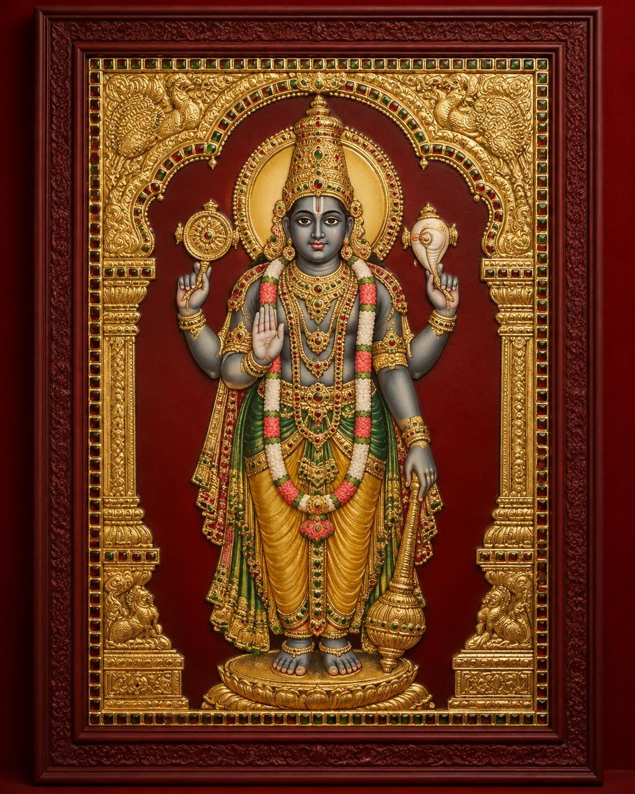
From beloved household gods to grand temple panels.
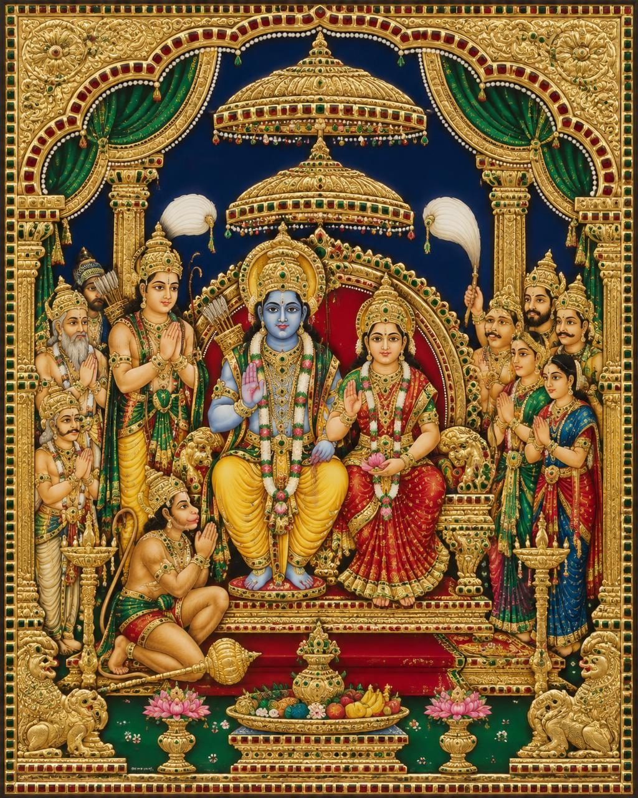
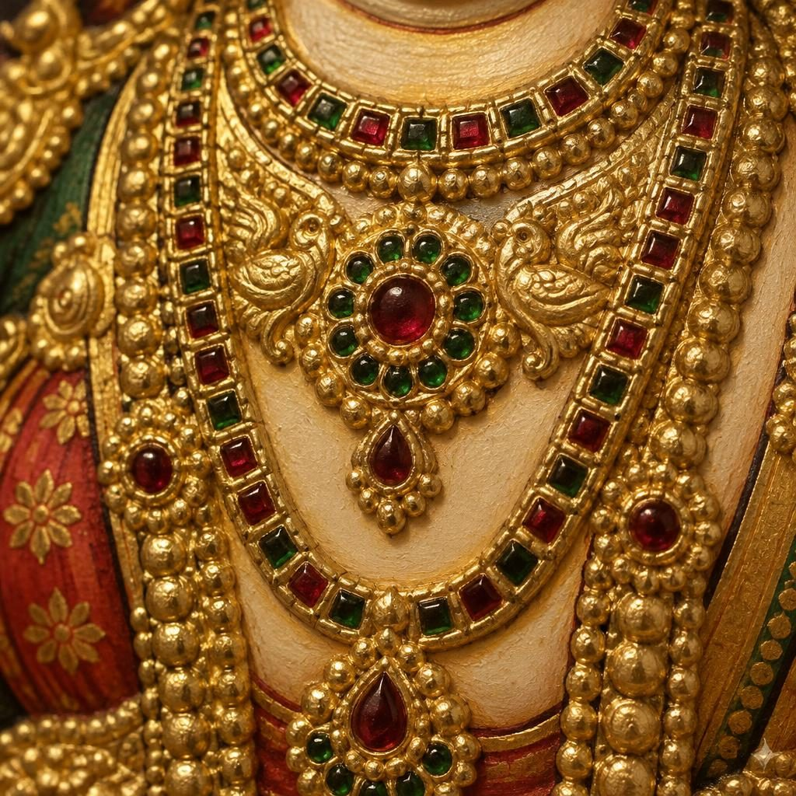
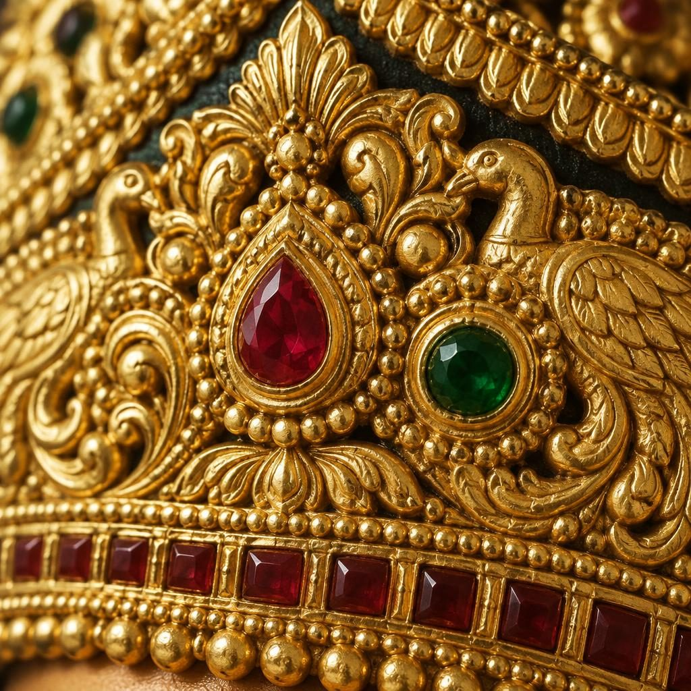
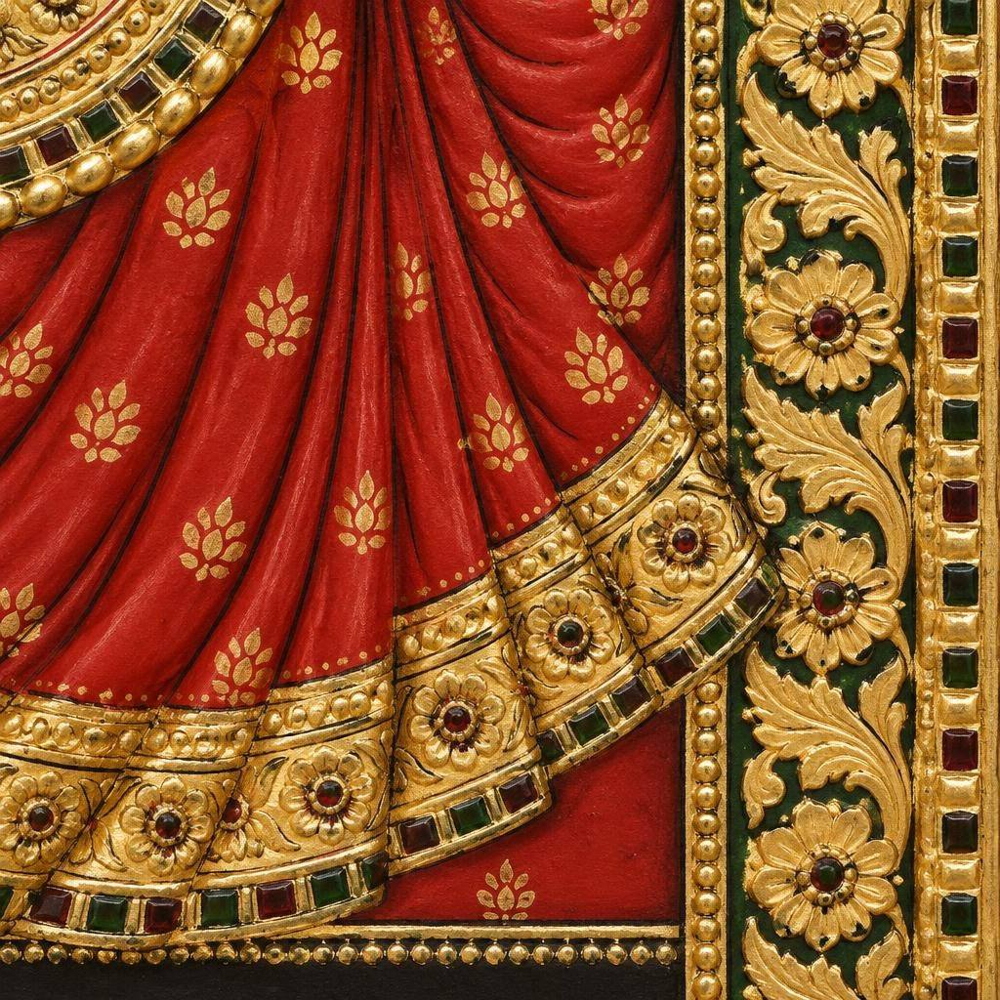
A grand royal court scene depicting the coronation of Rama, with Sita, Lakshmana and Hanuman in perfect symmetry. Over 40 individually set stones and layers of raised gold ornamentation.
Three techniques that give Tanjore art its unmistakable glow.
A paste of chalk and natural gum is built up layer by layer to create the raised jewellery, crowns and architecture that catch the light.
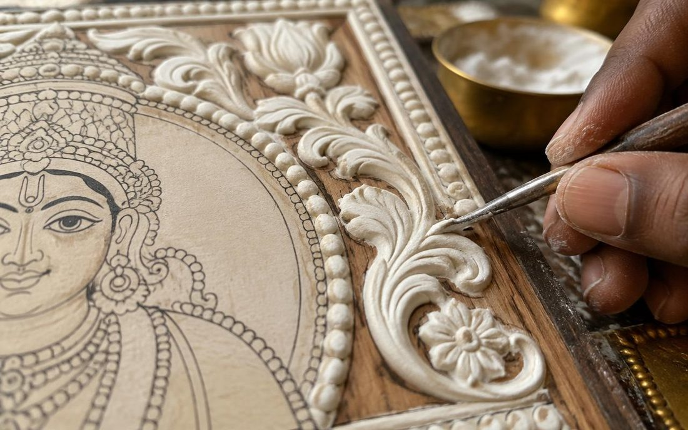
Hair-thin sheets of 22-carat gold are pressed onto the relief and burnished until they shine with a soft, lasting glow.
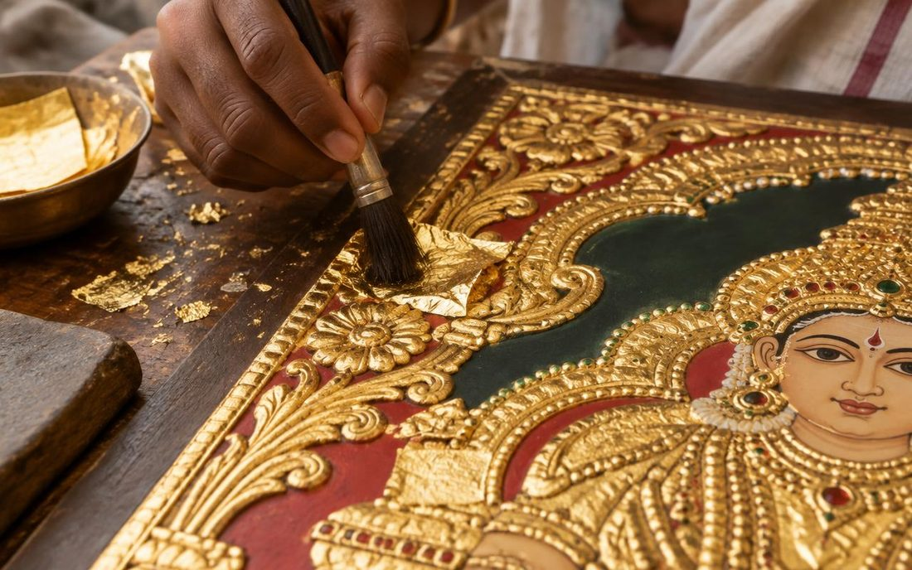
Rubies, emeralds, pearls and glass stones are pressed into the gesso before the final colours are applied.
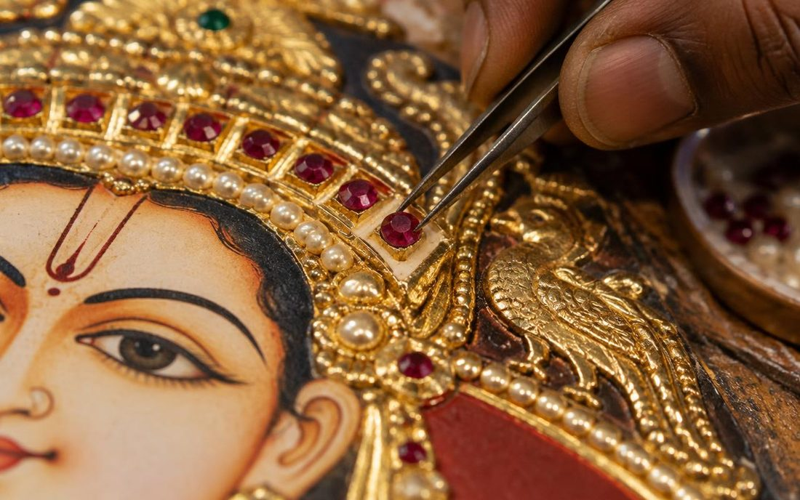
Everything in a Swarnam painting is chosen to last for generations.
Pure gold sheets that never tarnish or fade.
Hand-set rubies, emeralds, pearls and crystals.
Jackfruit and teak boards, cured for stability.
Mineral and plant colours with a deep, even tone.
Selected moments from our gallery and workshop.
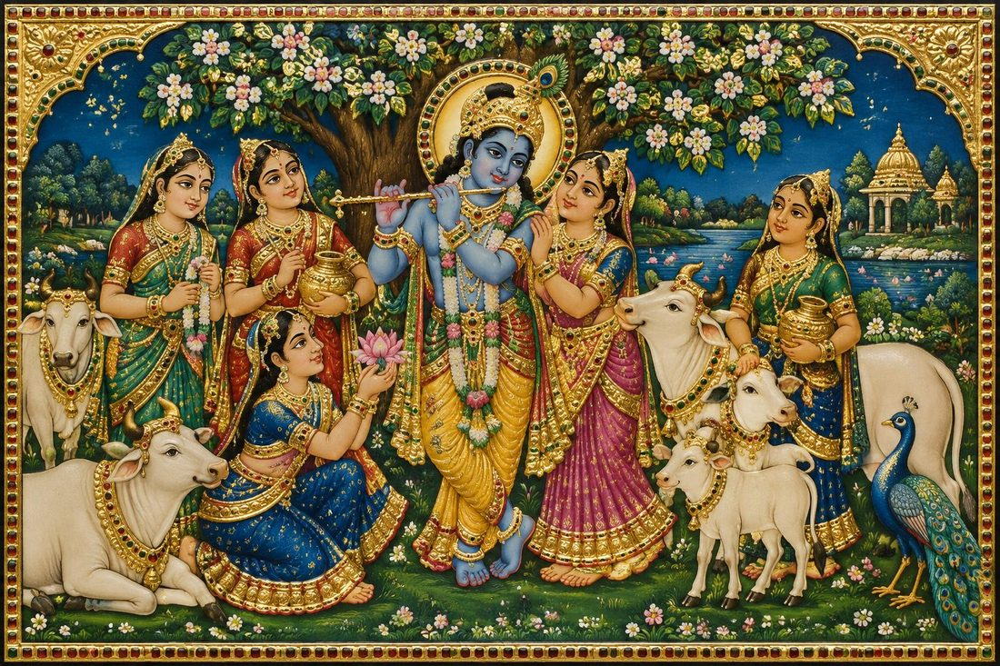
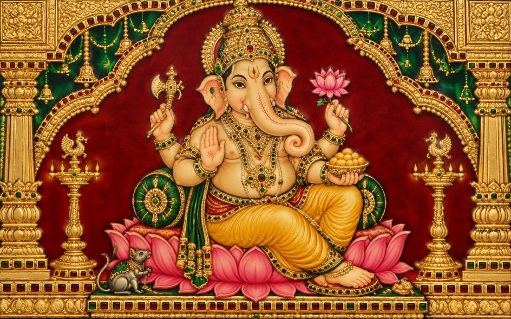
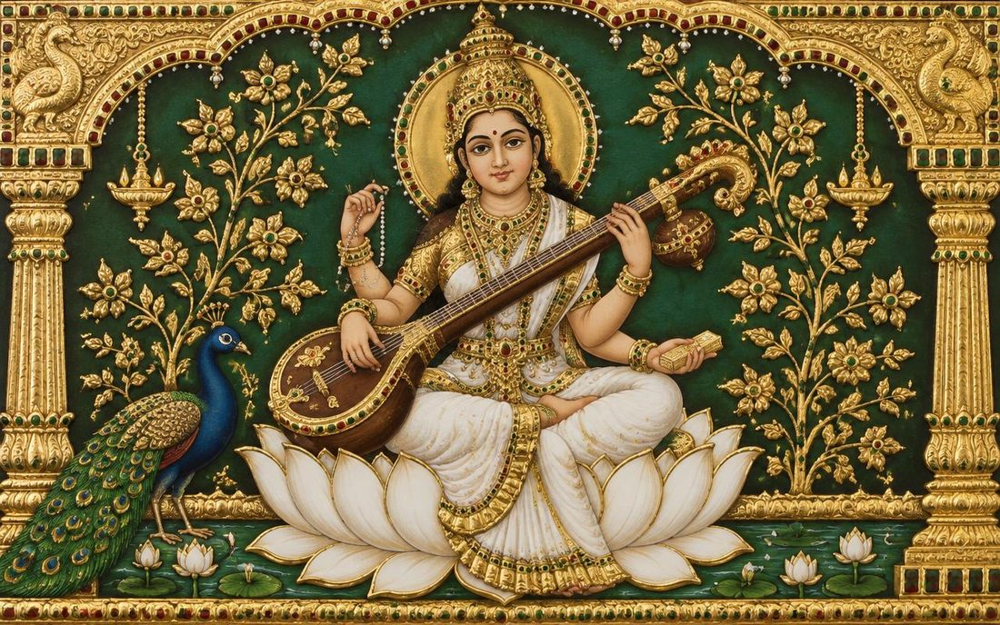
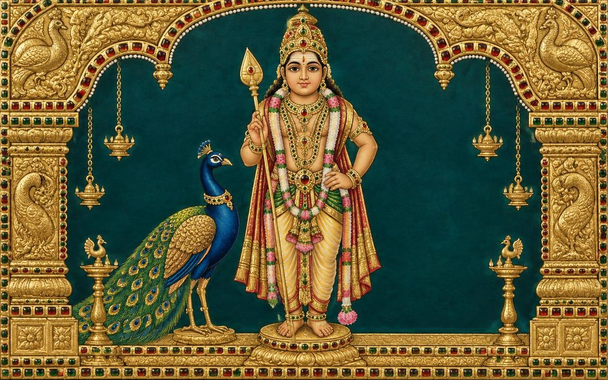
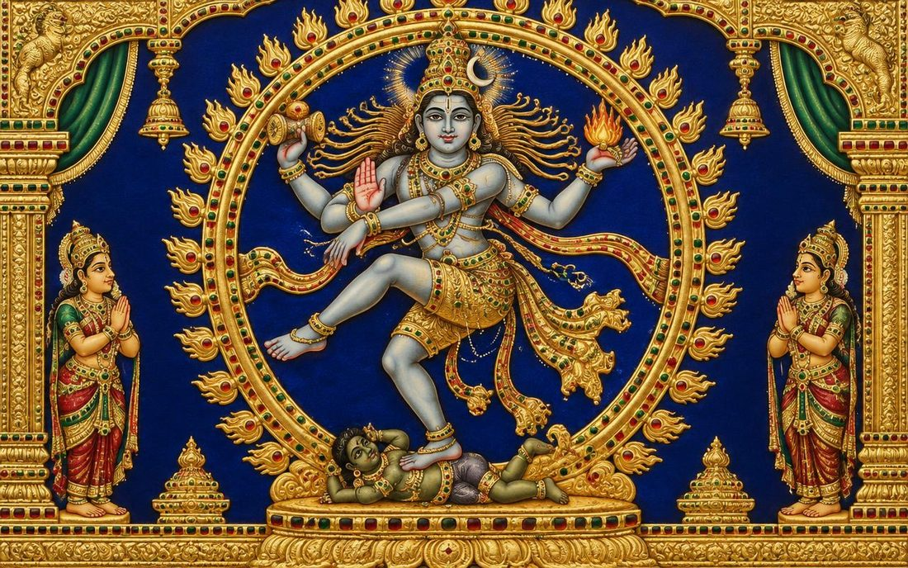
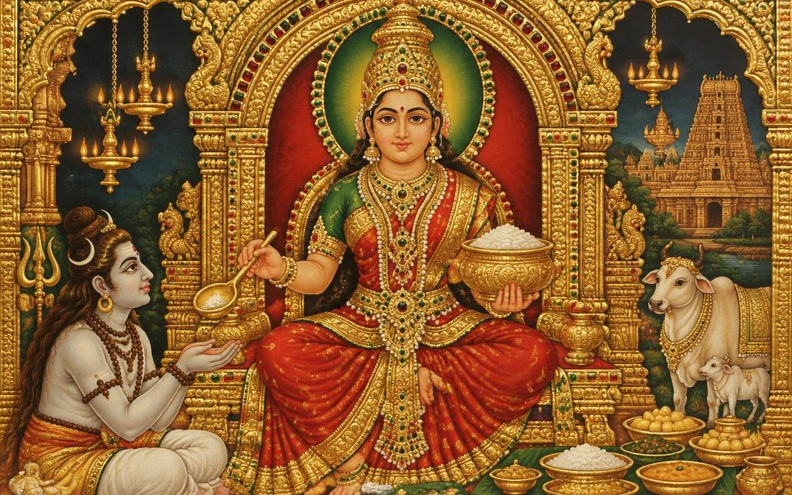
Learn the craft or see it made, in the studio where it all happens.
A 3-hour beginner session where you apply gold leaf to your own small panel.
Watch the masters at work and learn each stage of a Tanjore painting.
A relaxed gesso and colour session for parents and children aged 8+.